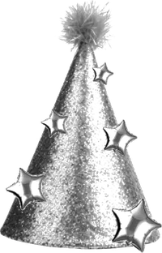
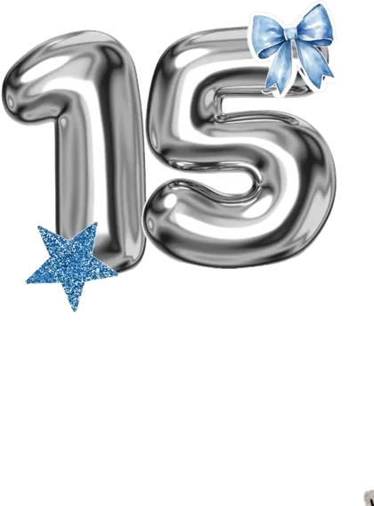
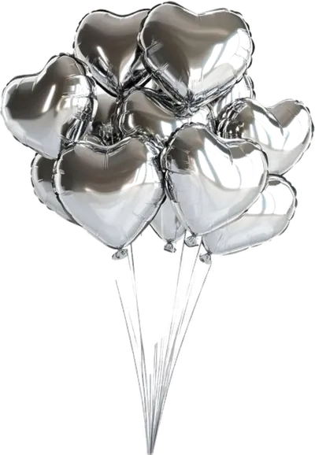

Compartí tus fotos
Álbum colaborativo
Ayudanos a guardar cada momento de la noche
¿Cómo participar?
Sacá tus mejores fotos y videos de la fiesta y subilos a la carpeta compartida. ¡Cuantas más, mejor!



Vas a ser parte de mi noche más especial. ¡Deslizá para ver todos los detalles!
Ver másLa cuenta regresiva
Dónde y cuándo
Ceremonia religiosa
Fecha y hora
Misa
Cómo llegarLugar
Hora
Fiesta
Cómo llegarA tener en cuenta
Musicalizá la fiesta
Sumá tus canciones favoritas para bailar toda la noche
Tocá + en Spotify para agregar tus temas
Compartí tus fotos
Ayudanos a guardar cada momento de la noche
Completá tus datos, ¡no me quiero perder ni un abrazo!
Tu presencia ya es un regalo, pero si quieres hacerme uno, esta es la forma más fácil 💙
Alias
CBU